- Стек вызовов (call stack) - это механизм работы JavaScript, который отслеживает вызовы функций во время выполнения кода. Каждый раз, когда функция вызывается, ее контекст выполнения (включая локальные переменные и параметры функции) помещается в вершину стека вызовов. Когда функция завершает свое выполнение, ее контекст удаляется из стека. Этот механизм позволяет JavaScript отслеживать, какие функции на данный момент выполняются, что позволяет управлять порядком выполнения операций и контролировать выход из функций.
- Цикл событий (event loop) – это концепция, которая описывает, как JavaScript обрабатывает асинхронные операции. Когда асинхронная операция завершается, она помещается в очередь событий. Цикл событий регулирует выполнение операций в этой очереди, выполняя их по мере возможности, когда call stack освобождается. Это позволяет JavaScript выполнять асинхронные задачи, такие как обработка сетевых запросов или таймеров, без блокировки основной программы.
- WebAPIs (веб-API) - это интерфейсы приложения, предоставляемые браузером для взаимодействия с различными аспектами веб-страницы или веб-приложения. Они предоставляют средства для выполнения различных задач, таких как обработка событий мыши, отправка сетевых запросов, манипуляции DOM, геолокация, работа с куки и многое другое.
- Очередь событий (event queue) представляет собой механизм в JavaScript, для упорядочения и управления событиями, которые ожидают обработки. Когда асинхронное событие завершается или готово к обработке, оно помещается в очередь событий. Цикл событий (event loop) в JavaScript постоянно проверяет очередь событий, и если стек вызовов (call stack) пуст, то он извлекает события из очереди и добавляет их в стек вызовов для выполнения. Это позволяет обрабатывать и выполнять асинхронные события в порядке их поступления.
-
пример let a = 1; // call stack setTimeout(() => { // webAPIs асинхронная добавляется event Queue a = 2; }, 1000); // добавится в очередь через 1с и выполнится после освобождения stack console.log(a); // 1 синхроная выполняется первее1. Переменная a инициализируется значением 1 и затем помещается в стек вызовов.
2. Затем вызывается setTimeout, который представляет собой функцию WebAPI и поэтому асинхронно добавляет свой коллбэк в очередь событий после заданной задержки. На данном этапе выполнение не блокируется, и код продолжает выполняться.
3. После setTimeout инициируется выполнение console.log(a), которое выводит текущее значение переменной a, равное 1.
4. По прошествии 1 секунды колбэк () => { a = 2; } из setTimeout попадает в очередь событий и ждет, когда стек вызовов будет пустым.
5. После того как console.log(a) выполнится, цикл событий проверит очередь событий и увидит, что есть колбэк из setTimeout и поместит его в стек вызовов для выполнения.
Схема работы JavaScript <<< click


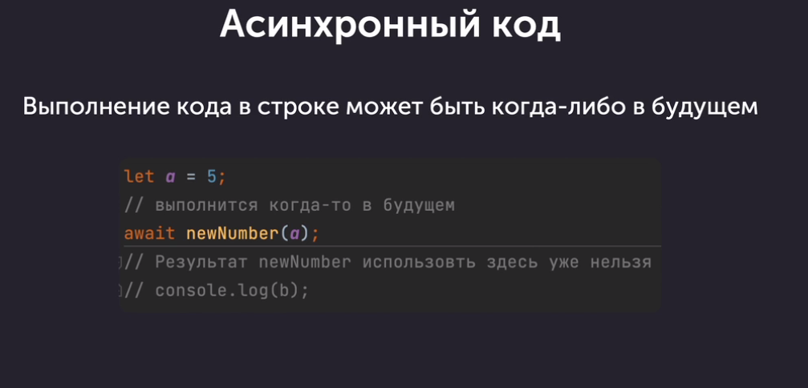
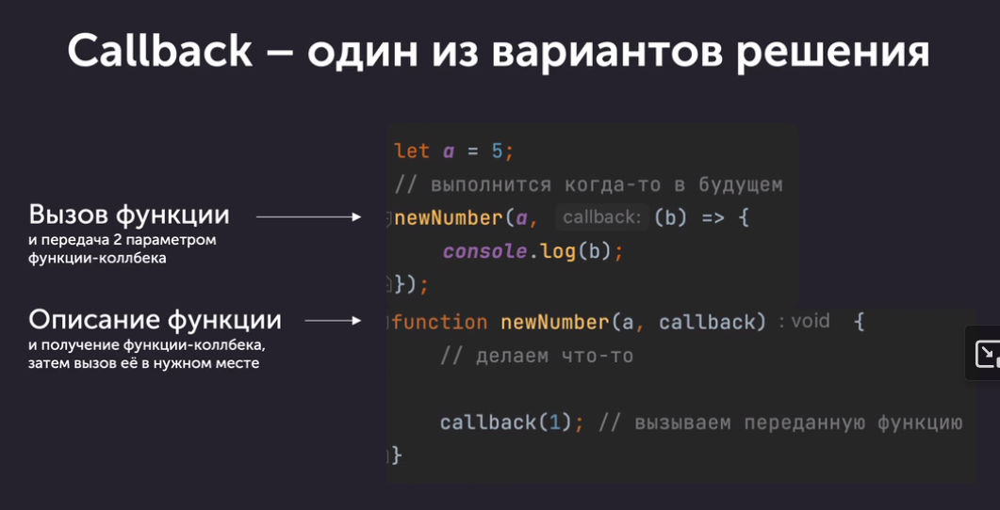
WebAPIs взаимодействуют с асинхронными операциями в JavaScript. Например, когда вы выполняете
сетевой запрос с использованием Fetch API или выполняете задержку с помощью setTimeout, это
асинхронные операции, которые используются вместе с WebAPIs. Вместо блокирования основного
потока
выполнения кода, они позволяют продолжать выполнение других операций, пока ожидают завершения
асинхронной задачи. Когда эти асинхронные операции завершаются, они помещают свои колбэки в
очередь
событий для последующего выполнения, таким образом включая асинхронные операции в механизмы
цикла
событий JavaScript.
Callback vs Promise
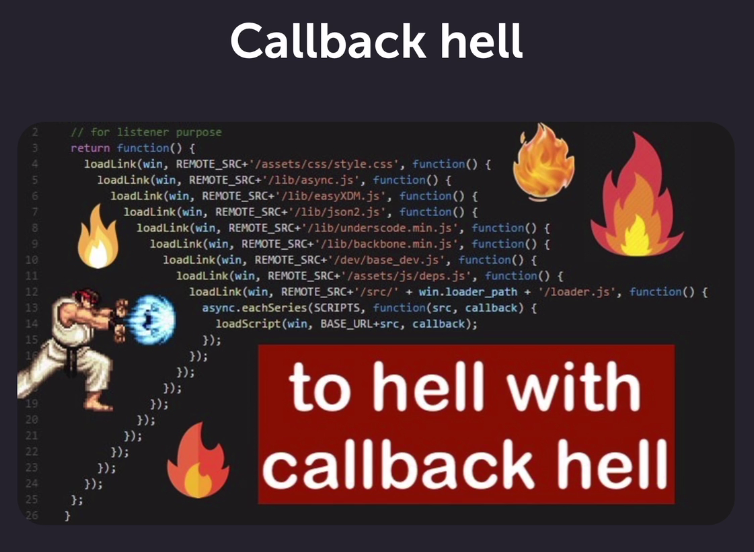
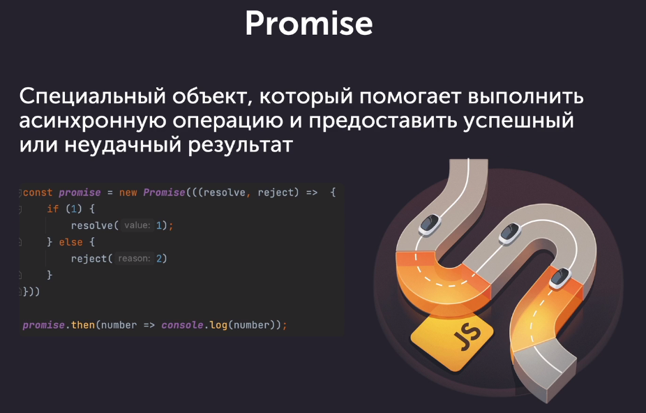
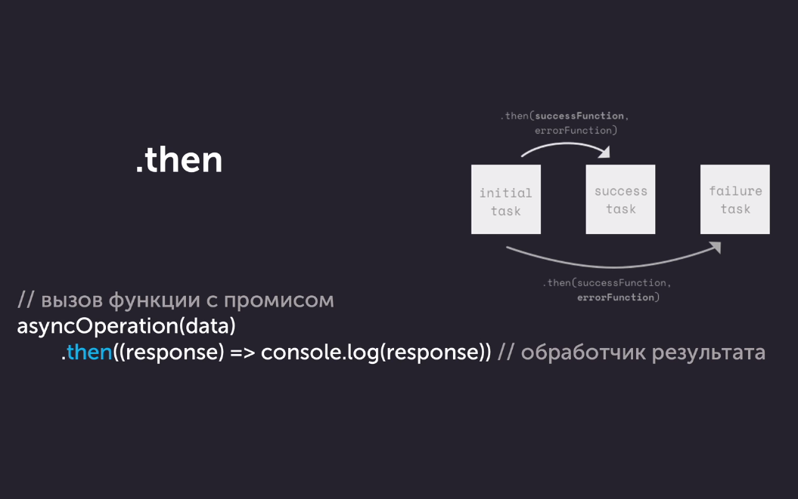
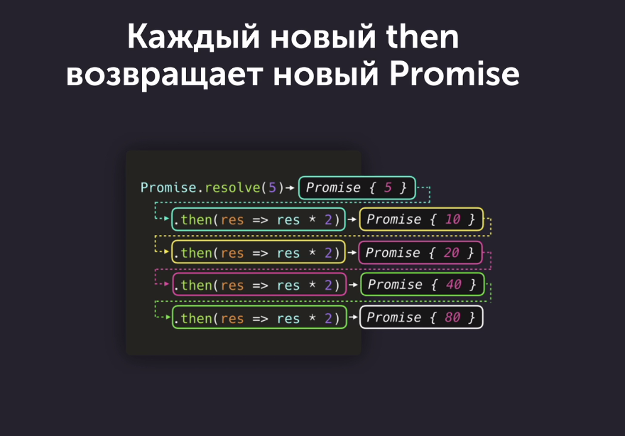
-
Пример
fetch('https://jsonplaceholder.typicode.com/todos/1') .then(response => response.json()) .then(json => console.log(json)) код выше только переписанный для разбора let result = fetch('https://jsonplaceholder.typicode.com/todos/1') console.log(result); // Promise{pending} result.then(response => { const resp = response.json(); console.log(resp); //Promise{pending} return resp; }) .then((json) => { console.log(json); //{userId: 1, id: 1, title: 'delectus aut autem', completed: false} });1) fetch('https://jsonplaceholder.typicode.com/todos/1')
Здесь происходит отправка GET-запроса по указанному URL. Fetch возвращает Promise, который разрешается после получения ответа от сервера.
2) .then(response => response.json())
– После того как запрос выполнен успешно, вызывается метод json(), который также возвращает Promise. Он читает данные из ответа в формате JSON.
3) .then(json => console.log(json))
– После успешного преобразования ответа в JSON, значение JSON будет передано в колбэк этого then, который выводит полученные данные в консоль. -
Try...catch в асинхронных операциях.
первый пример fetch('https://api.example.com/data') .then(response => { if (!response.ok) { throw new Error('Сетевая ошибка: ' + response.status); } return response.json(); }) .then(data => { console.log(data); }) .catch(error => { console.error('Произошла ошибка:', error); }); второй пример fetch('https://api.example.com/data') .then(response => { if (!response.ok) { throw new Error('Сетевая ошибка: ' + response.status); } return response.json(); }) .then(data => { console.log(data); }) .catch(error => { console.error('Произошла ошибка:', error); });В первом примере, если возникает ошибка при выполнении запроса с использованием fetch, метод .catch() обрабатывает эту ошибку и выводит сообщение об ошибке.
Во втором примере ключевое слово throw используется для генерации ошибки в случае, если ответ от сервера не является успешным (в данном случае, если значение response.ok равно false). Когда выполнение кода доходит до throw new Error('Сетевая ошибка: ' + response.status);, это приводит к генерации нового объекта ошибки с сообщением "Сетевая ошибка: " за которым следует статус ответа. Затем эта ошибка перехватывается блоком .catch(). В случае, если происходит ошибка, то контроль передается внутреннему блоку catch, что позволяет обработать ошибку. Данная конструкция позволяет управлять потенциальными ошибками, возникающими в ходе асинхронных операций с промисами, и обеспечивает возможность их обработки для предотвращения прерывания работы программы.
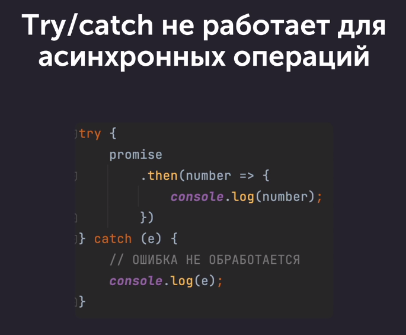
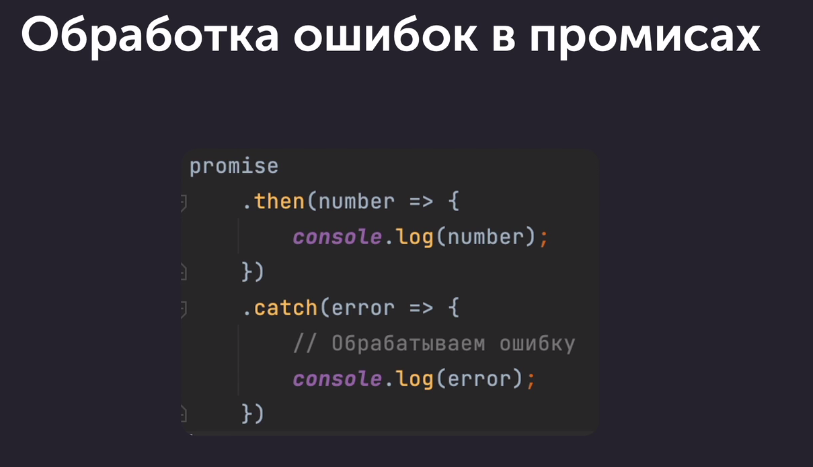
Try...catch в асинхронных операциях.
В случае исполнения асинхронного кода внутри блока try, любая ошибка, возникшая в этом асинхронном блоке, будет поймана блоком catch. Однако, в случае использования промисов, обработка ошибок в асинхронном коде требует использования конструкции .catch() или async/await, поскольку try...catch не позволяет перехватывать ошибки, возникающие внутри промисов.
В случае исполнения асинхронного кода внутри блока try, любая ошибка, возникшая в этом асинхронном блоке, будет поймана блоком catch. Однако, в случае использования промисов, обработка ошибок в асинхронном коде требует использования конструкции .catch() или async/await, поскольку try...catch не позволяет перехватывать ошибки, возникающие внутри промисов.
Создание промиса


- Пример
const myPromise = new Promise((resolve, reject) => { // Выполните асинхронную операцию, например запрос к серверу const isOperationSuccessful = true; // здесь нужно определить успешность операции if (isOperationSuccessful) { // Если операция завершилась успешно, вызовите функцию resolve с полученными данными resolve('Данные, которые нужно передать'); } else { // В случае ошибки, вызовите функцию reject с объектом ошибки reject(new Error('Сообщение об ошибке')); } }); // Использование промиса myPromise .then(data => { // Обработка успешного завершения console.log(data); }) .catch(error => { // Обработка ошибки console.error(error); });В данном примере myPromise - это новый промис, который принимает функцию исполнения (executor) с двумя аргументами: resolve и reject. Внутри функции исполнения происходит выполнение асинхронной операции, и в зависимости от результата вызывается функция resolve для успешного завершения операции или reject для обработки ошибки. Далее, методы .then() и .catch() используются для обработки успешного завершения и ошибок соответственно. - Пример неправильного и правильного кода
неправильный код с Callback $.ajax({ dataType: 'json', url: 'https://jsonplaceholder.typicode.com/todos/1', success: (result) => { console.log(result); // 1 начало делаем запрос callback использовать результат каждого запроса в следующем $.ajax({ dataType: 'json', url: 'https://jsonplaceholder.typicode.com/todos/' + (result.id + 1), success: (result) => { console.log(result); // 2 начало делаем запрос callback использовать результат каждого запроса в следующем $.ajax({ dataType: 'json', url: 'https://jsonplaceholder.typicode.com/todos/' + (result.id + 1), success: (result) => { console.log(result); } }) // 2 конец делаем запрос callback использовать результат каждого запроса в следующем } }) // 1 конец делаем запрос callback использовать результат каждого запроса в следующем } }) Пример правильного кода с проимисами // создание промиса function getJsonData(url) { return new Promise((resolve, reject) => { if (!url) { reject('Запрос осуществить невозможно') } $.ajax({ dataType: 'json', url: url, success: (result) => { resolve(result); }, error: () => { reject('Ошибка запроса'); } }) }) } getJsonData('https://jsonplaceholder.typicode.com/todos/1') .then(json => { console.log(json)//{userId: 1, id: 1, title: 'delectus aut autem', completed: false} return getJsonData('https://jsonplaceholder.typicode.com/todos/' + (json.id + 1)) }) .then(json => { console.log(json) //{userId: 1, id: 2, title: 'quis ut nam facilis et officia qui', completed: false} return getJsonData('https://jsonplaceholder.typicode.com/todos/' + (json.id + 1)) }) .then(json => { console.log(json)//{userId: 1, id: 3, title: 'fugiat veniam minus', completed: false} });В неправильном коде, используется подход с использованием callback, что приводит к вложенности колбэков (Callback Hell), что затрудняет читаемость и поддержку кода. Каждый последующий запрос делается внутри колбэка предыдущего запроса, что делает код сложным для поддержки и расширения. Однако, в правильном примере кода используются промисы. Промисы предоставляют чистый способ управления асинхронными операциями. Каждый последующий запрос обрабатывается в цепочке методов .then(). Это упрощает чтение и понимание кода, делает его более модульным, и удобным для поддержки и расширения. Таким образом, использование промисов позволяет избежать проблемы "callback hell" и обеспечивает более чистый и удобный способ управления асинхронными операциями в JavaScript. -
Выполнение нескольких промисов параллельно
Отличие между использованием Promise.all и последовательными вызовами метода then заключается в том, как обрабатываются результаты параллельных асинхронных операций.Promise.all([ getJsonData('https://jsonplaceholder.typicode.com/todos/1'), getJsonData('https://jsonplaceholder.typicode.com/todos/2'), getJsonData('https://jsonplaceholder.typicode.com/todos/3'), ]) .then(json => console.log(json)); // массив (3) [{…}, {…}, {…}]Когда вы используете последовательные вызовы метода then, каждый запрос выполняется после того, как предыдущий завершится, что значит, что запросы выполняются последовательно (или "по очереди"). Однако, при использовании Promise.all, все асинхронные операции запускаются параллельно. Promise.all ждет, пока все промисы в массиве завершатся, и только после этого возвращает результат в виде массива со всеми значениями. Это делает его полезным для выполнения нескольких асинхронных операций параллельно и получения результатов после их завершения. Таким образом, если вам необходимо получить результаты нескольких асинхронных операций и обработать их после того, как все они завершены, использование Promise.all является более эффективным подходом.
При использовании Promise.all в случае ошибки хотябы в одном промисе то все будут помечены как
недачные.
Asinc/Await
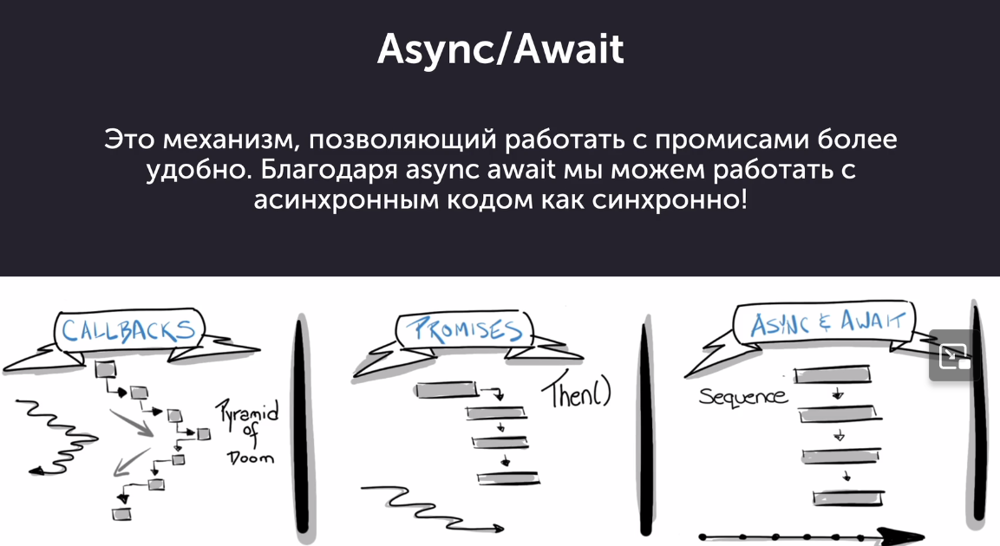
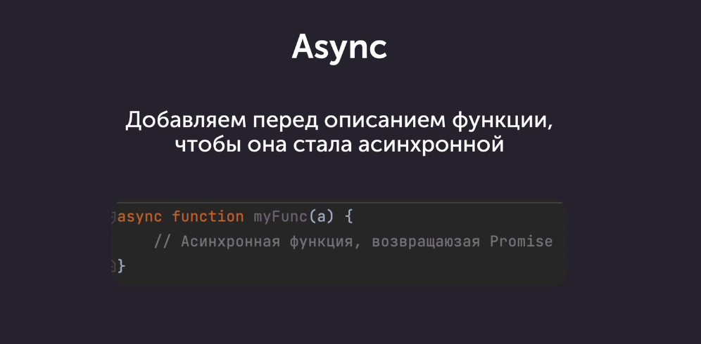
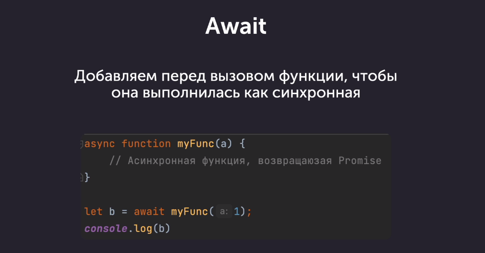
Async/await - это синтаксический сахар в JavaScript, предоставляющий более удобный способ работы с асинхронными операциями и промисами. Ключевое слово "async" используется для определения асинхронной функции, которая всегда возвращает промис. Внутри асинхронной функции можно использовать ключевое слово "await" для приостановки выполнения функции до тех пор, пока промис, переданный в "await", не будет разрешен (выполнен). Это позволяет писать код асинхронных операций в более линейном стиле, похожем на синхронный код. Преимущества использования async/await включают улучшение читаемости кода и упрощение обработки ошибок в асинхронном коде благодаря использованию блоков try/catch.
- Пример
// синхронное выполнение кода внутри асинхронной функции async function start() { const json = await getJsonData('https://jsonplaceholder.typicode.com/todos/1'); console.log('синхронное выполнение кода внутри асинхронной функции', json); const json2 = await getJsonData('https://jsonplaceholder.typicode.com/todos/' + (json.id + 1)); console.log('синхронное выполнение кода внутри асинхронной функции', json2); const json3 = await getJsonData('https://jsonplaceholder.typicode.com/todos/' + (json2.id + 1)); console.log('синхронное выполнение кода внутри асинхронной функции', json3); }; start();Синхронное выполнение кода внутри асинхронной функции позволяет организовать последовательную обработку данных при использовании асинхронных операций. Преимуществом этого подхода является поддержание порядка выполнения операций и удобное чтение кода благодаря использованию ключевого слова await, что делает его более чистым и понятным. Так же можно использовать классический try..catch - Примеры
var z = 5; setTimeout(function timeout() { console.log('внутри', z); z = 10; }, 3000); console.log(z);Когда вы вызываете setTimeout, он планирует выполнение функции timeout() спустя указанное количество миллисекунд (в данном случае 3000 мс). Однако код продолжает выполняться без ожидания завершения отложенной функции timeout(). Таким образом, при первом вызове console.log(z) будет выведено текущее значение z, которое равно 5. После прошествия 3 секунд, функция timeout() будет вызвана, и в ней значение переменной z изменится на 10. Однако, вывод внутри timeout() снова выведет значение, которое было в момент вызова функции setTimeout, а именно 5, так как внутри timeout() в тот момент значение уже было скопировано и сохранено в замыкании. Таким образом, в результате выполнения этого кода сначала будет выведено значение 5, а через 3 секунды внутри timeout() также будет выведено значение 5. В момент выполнения console.log('внутри', z); внутри функции timeout(), переменная z уже была изменена на 10. Однако, из-за особенностей работы синхронного и асинхронного кода в JavaScript, значение z внутри console.log('внутри', z); остается 5 из-за того, что вложенная функция имеет доступ только к переменным, объявленным во внешней области видимости на момент ее создания. - примеры
function delay(sec) { return new Promise((resolve, reject) => { if (!sec) { reject('Не указан параметр в секундах') } else { setTimeout(resolve, sec * 1000); } }) } delay(2).then(() => console.log('Прошло 2 секунды')); delay(5).then(() => console.log('Прошло 5 секунд'));delay().then(() => console.log('Прошло 5 секунд')); //Uncaught (in promise) Не указан параметр в секундах
Этот код создает промис, который приостанавливает свое выполнение на переданное количество секунд, после чего выполняет переданную в качестве параметра колбэк-функцию с помощью метода then(). - примеры
Promise .resolve('a') .then((x) => { console.log(x); return 'b' }) .then((x) => { console.log(x); return 'c' }) .then((x) => console.log(x));Конструкция Promise.resolve('a') создает новый промис, который немедленно выполняется и возвращает значение 'a'. Затем метод .then() применяет функцию обратного вызова, которая выводит 'a' в консоль и возвращает значение 'b'. Следующий метод .then() принимает значение 'b' от предыдущего обработчика, выводит его в консоль, затем возвращает значение 'c'. Наконец, последний метод .then() принимает значение 'c', выводит его в консоль, и так как больше обработчиков нет, операция завершается. По итогу выполнения этого кода в консоль будут выведены значения 'a', 'b' и 'c' в указанном порядке.